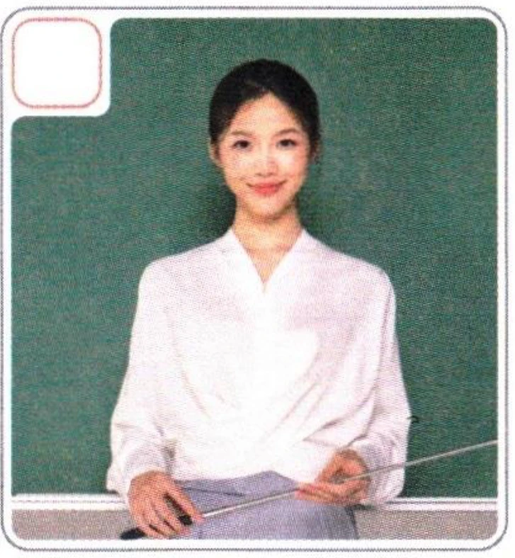
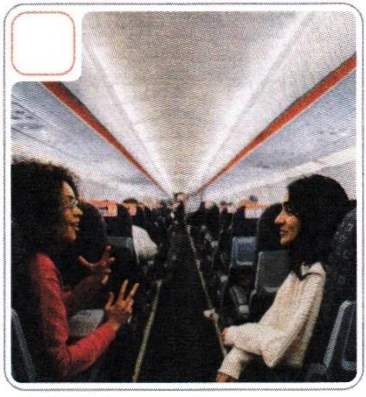

新HSK教程1学练手册New HSK Course 1 WorkbookНовый HSK Курс 1 Рабочая тетрадь
3听录音，写出听到的声调并大声朗读。Listen, mark the tones you hear, then read aloud.Прослушайте, отметьте тоны, которые вы слышите, затем прочитайте вслух.
4看图片，选择正确的对话。Look at the pictures and choose the correct dialogue.Посмотрите на картинки и выберите правильный диалог.


1Wǒ shì Fǎguó rén.I am French.Я француз.Wǒ yě shì Fǎguó rén.I am also French.Я тоже француз.2Zhè shì wǒ nǚpéngyou.This is my girlfriend.Это моя девушка.Nǐ hǎo, hěn gāoxìng rènshi nǐ.Hello, nice to meet you.Здравствуйте, приятно познакомиться.3Wáng lǎoshī shì nǐ de Zhōngwén lǎoshī ma?Is Teacher Wang your Chinese teacher?Учитель Ван ваш учитель китайского?Shì de.Yes.Да.4Wèi, nǐ gōngzuò máng ma?Hello, are you busy with work?Алло, ты занят на работе?Wǒ gōngzuò bù máng.I'm not busy with work.Я не занят на работе.012